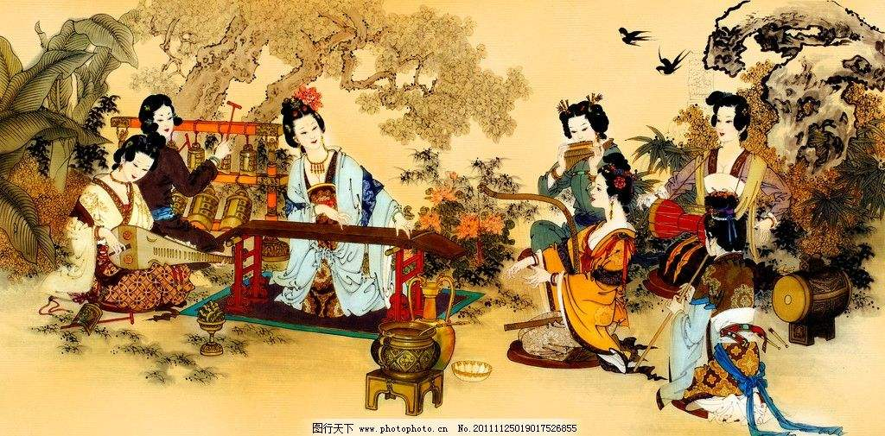
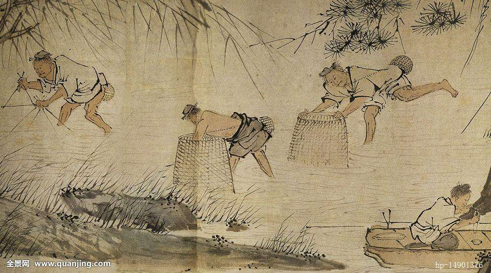
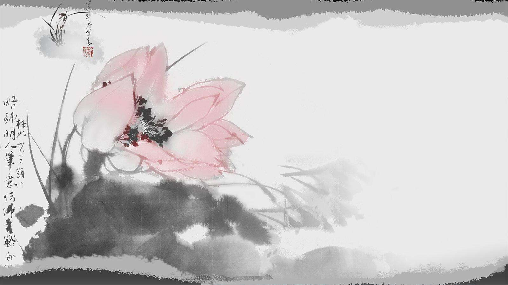

唐朝
明朝

汉唐
汉唐时期，中国传统文化包括儒释道思想以及文字、绘画、建筑、雕刻等等，
传入了日本、朝鲜等国，譬如程朱理学与陆王心学在日本的传播，形成了日本的朱子学、阳明学。
唐鉴真东渡，中国的佛教文化以及雕塑等传到日本，大量日本遣唐使如吉备真备、高僧空海、
阿倍仲麻吕等到中国研习中国的文化，如此，使日本的文字、建筑深受中国文化的影响。在韩国，影响最大的是中国文化，
尤其是儒家思想和明清以后的实学思想，如果人们不知道李退溪、曹南冥、李栗谷、洪大容、丁若镛等人是韩国哲学家
，仅看他们的著作难以判断作者的国籍，韩国被西方国家称为是儒教国家的活化石。
明清
中国传统文化在明清之际，通过西方耶稣会士，通过东学西渐，
还传播到了欧洲一些国家。中国的四大发明（造纸术、印刷术、火药、指南针、）先后传入西方后，
对于促进西方资本主义社会的形成和发展，起到了重要作用。中国传统文化对法国的影响最大，
法国成为当时欧洲“中国文化热”的中心。从17世纪开始，中国的一些儒家经典如《论语》、《大学》等，
就通过法国传到了欧洲其他国家。法国18世纪的启蒙思想家很少有不受中国文化影响的。
如笛卡儿、卢梭、伏尔泰、孟德斯鸠、狄德罗、霍尔巴赫，他们对中国文化的推崇程度，
让我们都感到震惊。伏尔泰就在礼拜堂里供奉着孔子的画像，把孔子奉为人类道德的楷模。
德国哲学家莱布尼兹、康德、费希特、谢林、黑格尔直到费尔巴哈以及大文豪歌德等人都研究过中国哲学，
在不同程度上受到过中国文化的影响。如莱布尼茨就认为，正是中国的发现，才使欧洲人从宗教的迷惘中觉醒过来。
这种影响或直接或间接地影响了法国的启蒙运动，影响了德国的辩证法思想。
文化分支
中国分化博大精深，包罗万象：琴棋书画，礼乐射御书数。。。
文化影响

中国文化的影响，从古至今，都是被学习的榜样。古时更有周边国家派使者学习我国文化，可见我国文影响深远。